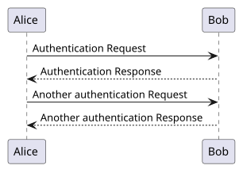

Command line
Replaces java -jar plantuml.jar and accepts its flags. Flags it does not provide, such as --pdf, are rejected with exit status 1 instead of being silently ignored.
plantuml --svg diagram.pumlgopuml is a Go reimplementation of PlantUML 1.2026.9 (MIT variant). It reads the same diagram language and produces the same SVG, PNG and text output.
@startuml
Alice -> Bob: Authentication Request
Bob --> Alice: Authentication Response
Alice -> Bob: Another authentication Request
Alice <-- Bob: Another authentication Response
@enduml$ plantuml --svg diagram.puml

Replaces java -jar plantuml.jar and accepts its flags. Flags it does not provide, such as --pdf, are rejected with exit status 1 instead of being silently ignored.
plantuml --svg diagram.pumlRender returns the image and typed errors, such as *gopuml.SyntaxError with the line and the message.
res, err := gopuml.Render(ctx, src,
&gopuml.Options{Format: gopuml.SVG})Compatible with PlantUML's built-in server and the main plantuml-server routes: /svg/<encoded>, /png/<encoded>, POST /render and more.
plantuml --http-server:8080An ES module for browsers and Node.js, in the SANDBOX security profile. The playground on this page runs it.
const result = await plantuml.render(source,
{ format: 'svg' });Edit the source, and gopuml v0.2.0 renders it in this page with WebAssembly. No server is involved.
The module loads when the playground is on screen.
If this message stays, the playground could not start: browsers do not run its scripts from a page opened as a file. Serve the page over HTTP, for example with make site and python3 -m http.server -d dist/site.
| Diagram type | SVG | PNG | TXT / UTXT |
|---|---|---|---|
| Sequence | yes | yes | yes |
| Class and object | yes (needs dot) | yes (needs dot) | no |
| Use case, component and deployment | yes (needs dot) | yes (needs dot) | no |
| State | yes (needs dot) | yes (needs dot) | no |
| Activity (new syntax) | yes | yes | no |
| Activity (legacy syntax) | yes (needs dot) | yes (needs dot) | no |
| Packet | yes | yes | no |
The preprocessor (!include, !define, functions, all 74 builtins, JSON), themes, skin parameters, styles and creole are supported, including diagrams embedded in text with {{ ... }}, and so is the PREPROC output (--preproc).
The standard library of upstream 1.2026.9 is bundled (!include <C4/C4_Container>, !include <awslib/AWSCommon> and the other libraries that plantuml -stdlib lists), apart from nine libraries whose license could not be verified or does not allow bundling them (see NOTICE). Sprites are drawn: monochrome, color, image and SVG sprites defined in a diagram, and the sprites and images of the standard library.
Other diagram types (archimate, timing, gantt, mindmap, and so on) are reported with an explicit "... diagrams are not supported yet" error image instead of a wrong drawing.
Each release has an archive of the command line for linux, macOS and windows on amd64 and arm64 (.zip on windows), an archive of the WebAssembly module, and checksums.txt with the SHA-256 of every archive. Download the archive of your system and checksums.txt from the page of v0.2.0, or with the GitHub CLI:
gh release download v0.2.0 --repo ekalinin/gopuml -p '*_darwin_arm64.tar.gz' -p checksums.txtor with curl:
curl -fLO https://github.com/ekalinin/gopuml/releases/download/v0.2.0/gopuml_0.2.0_darwin_arm64.tar.gz
curl -fLO https://github.com/ekalinin/gopuml/releases/download/v0.2.0/checksums.txtthen check and unpack it:
shasum -a 256 --ignore-missing -c checksums.txt # sha256sum on linux
tar xzf gopuml_0.2.0_darwin_arm64.tar.gz plantuml
./plantuml --versionWith Go 1.26 or later, the command line can also be installed from source:
go install github.com/ekalinin/gopuml/cmd/plantuml@v0.2.0make bench runs the command line of v0.2.0 and the upstream jar on the same machine, with the same dot for both. The start time is the median time of separate processes that each render a small sequence diagram with -tsvg -pipe. The rendering time of a diagram type is the median time of one process that renders the curated conformance cases of that type with -tsvg -o <dir>; both use their default of one thread per processor.
| PlantUML 1.2026.9 (Java) | gopuml | |
|---|---|---|
| Start time (one small sequence diagram) | 698 ms | 15 ms |
| Rendering: sequence (84 cases) | 936 ms (11 ms per case) | 120 ms (1.4 ms per case) |
| Rendering: class (23 cases) | 883 ms (38 ms per case) | 97 ms (4.2 ms per case) |
| Rendering: description (16 cases) | 1.02 s (63 ms per case) | 142 ms (8.9 ms per case) |
| Rendering: state (21 cases) | 883 ms (42 ms per case) | 138 ms (6.6 ms per case) |
| Rendering: activity (29 cases) | 860 ms (30 ms per case) | 108 ms (3.7 ms per case) |
The numbers depend on the machine. make bench measures them again on yours.
make conformance REQUIRE=all compares v0.2.0 with upstream PlantUML 1.2026.9 on 686 cases (upstream's Vega test corpus plus curated cases):
testdata/conformance/known-differences.yaml)Most SVG outputs are byte-identical to upstream's, except the encoded source in <?plantuml-src ...?>, which uses a different deflate implementation and decodes to the same text.